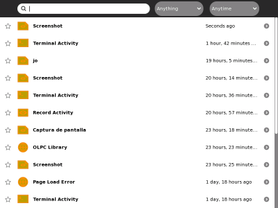
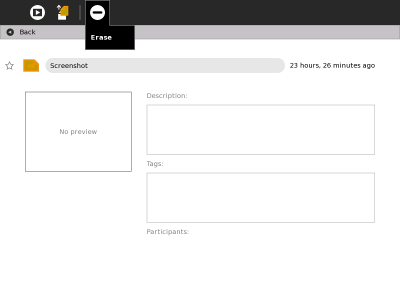
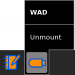
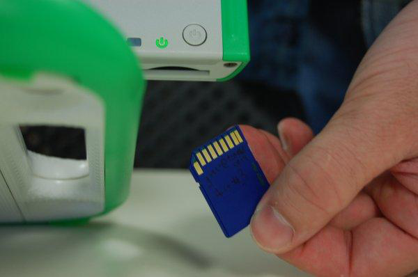

| Ecran et haut-parleurs | Index | Vue de Voisinage |
L'activité Journal de Sugar permet d'accéder aux fichiers stockés sur le XO et à la reprise des activités. Pour accéder au journal, cliquez sur l'icone Journal dans le cadre situé à droites des icones Vue comme illustré ci-dessous.
Votre XO peut stocker un nombre limité de fichiers sur son disque flash de 1 Go. Vous devriez entretenir votre XO afin qu'il ne soit pas à court d'espace de stockage pour de nouveaux fichiers. Vous pouvez effacer des fichiers via l'activité Journal.

Libérer de l'espace pour de nouveaux fichiers :
Sélectionnez le fichier que vous voulez effacer en cliquant avec le bouton droit sur son icone et en sélectionnant Effacer.
Ou cliquez sur la touche représentée par une petite flèche pour prévisualiser l'Activité ou le fichier. Une fois que vous aurez prévisualisé l'article, cliquez sur l'icone Effacer (le signe - en haut de l'écran).

Si vous voulez reprendre l'utilisation du fichier, cliquez sur l'icone du fichier pour lancer l'Activité.
Vous pouvez utiliser une carte SD, un dispositif de stockage USB ou encore un disque externe afin de sauvegarder et récupérer des fichiers.
Une carte SD (carte Secure Digital) est un rectangle plat en plastique d'environ 3,2 sur 2,4 cm (1 1/4" by 5/8"). Elle est aussi utilisée pour stocker des images par un grand nombre d'appareils photo numériques. Le XO comporte une fente pour carte SD.
Les plus faciles à utiliser sont les lecteurs de mémoire Flash USB (clé USB). Ils sont environ de la taille d'un paquet de chewing-gum. Certaines marques possèdent une lampe-témoin qui s'allume lors d'un transfert de données d'un ordinateur.
Il existe trois ports sur le XO que vous pouvez utiliser avec des clés USB. L'un se trouve à gauche de l'écran, les deux autres à droite. Tous sont protégés par les antennes lorsque le XO est fermé.
Amenez le pointeur sur l'icone USB en bas du Journal et cliquez Démonter (Unmount).

Quand l'icone USB disparaît, il est possible d'enlever la clé USB sans risque.
La fente pour carte SD est située en-dessous de l'écran, sous le bouton de mise en route ; il faut donc amener l'écran dans sa position verticale puis le tourner à quelques centimètres du clavier pour pouvoir accéder à la fente.

Amenez le pointeur sur l'icone de la carte SD en bas du Journal et cliquez sur Démonter (Unmount).
Quand l'icone SD disparaît, il est possible d'enlever la carte SD sans risque. Poussez la carte vers le haut avec votre pouce et sortez-la de la fente.
| Ecran et haut-parleurs | Index | Vue de Voisinage |